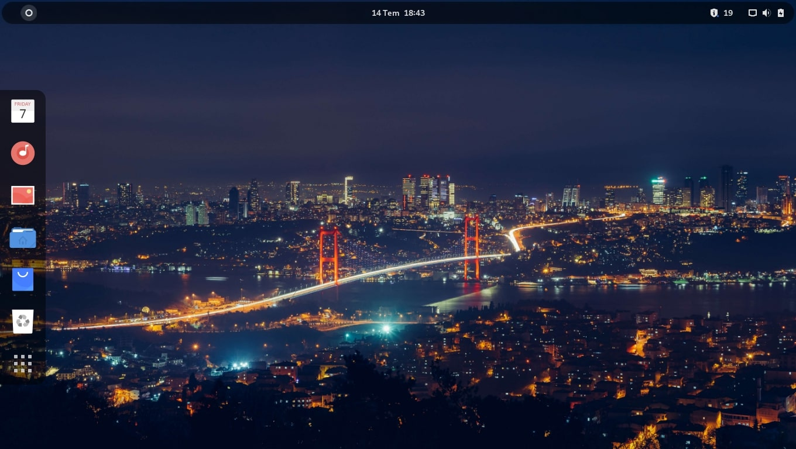

TeArch Linux | Download TeArch Linux - Xfce With simplicity of Xfce and usefulness of TeArch. Download Alternative  TeArch Linux - Gnome With power of Gnome and usefulness of TeArch. Download Alternative